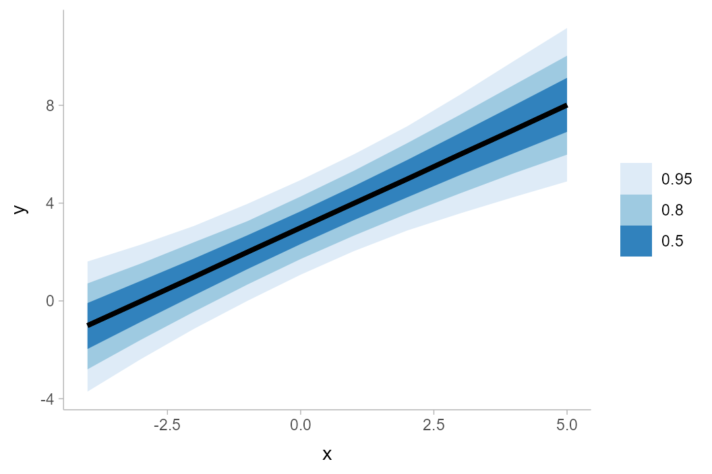
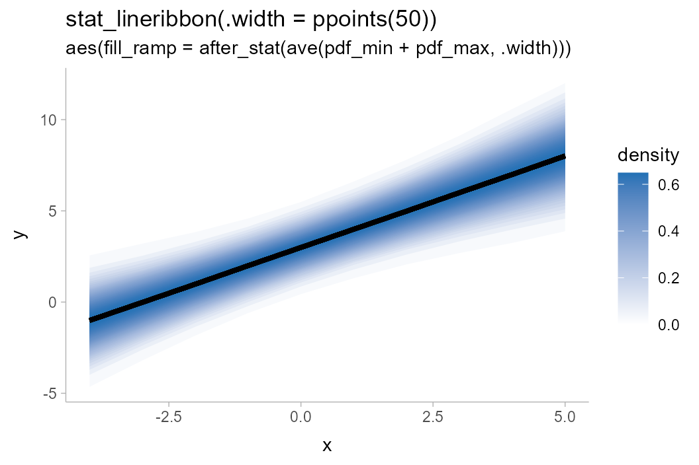
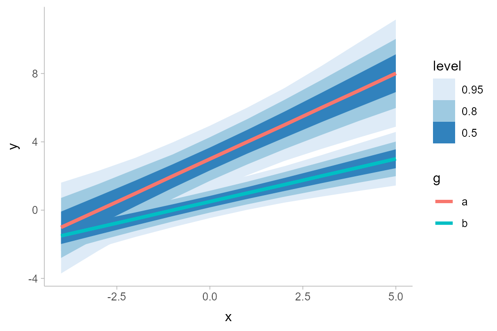
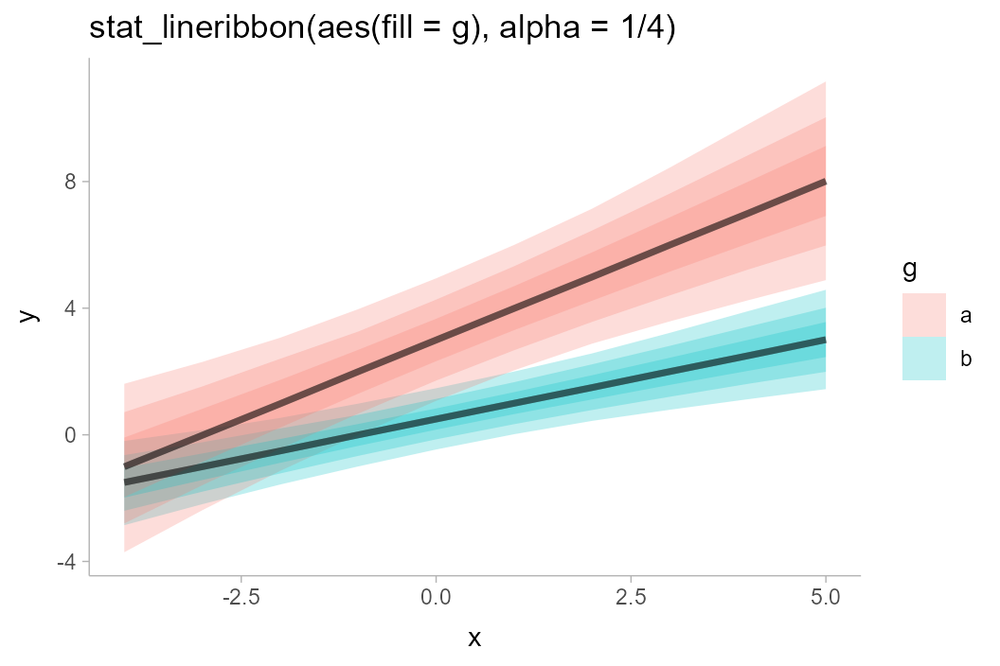
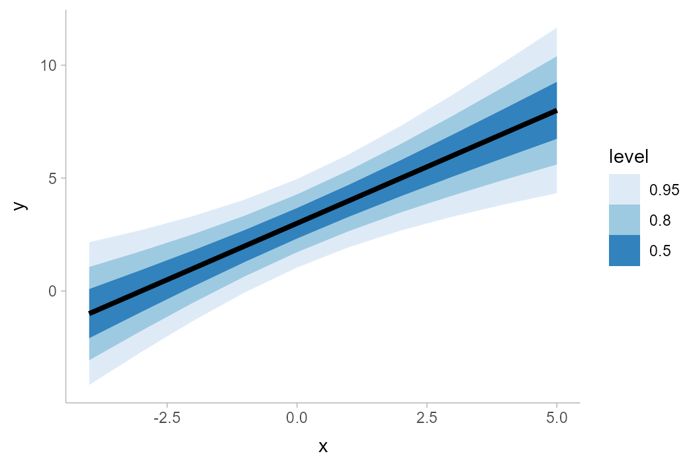
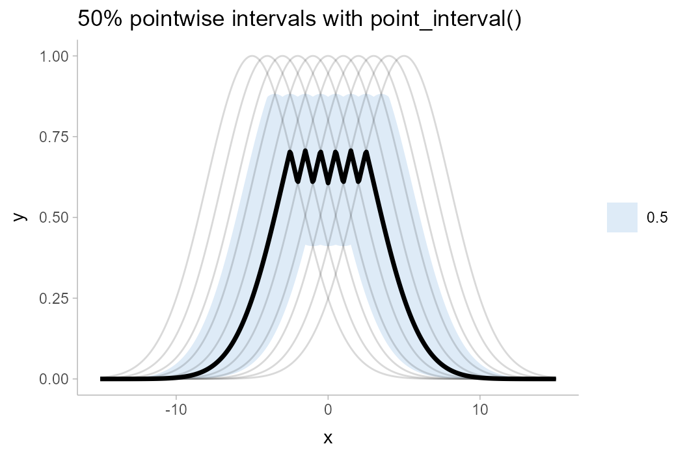
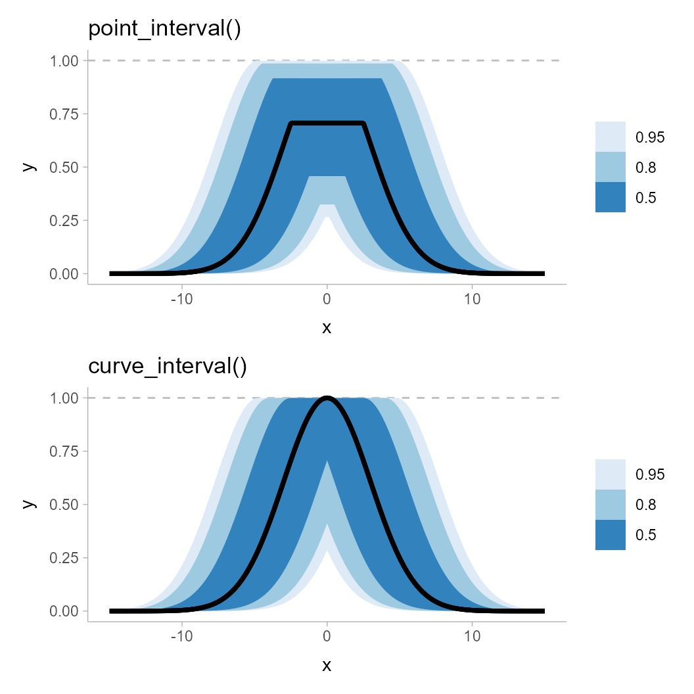
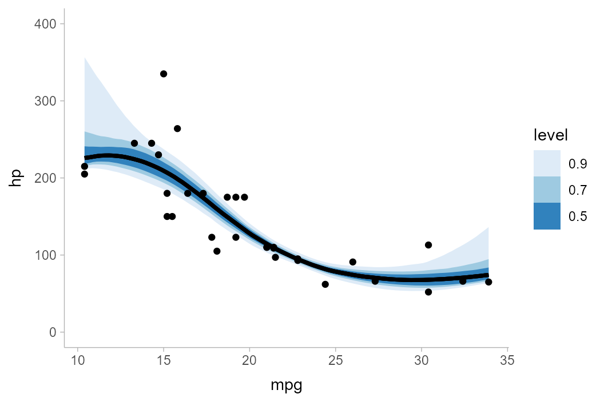
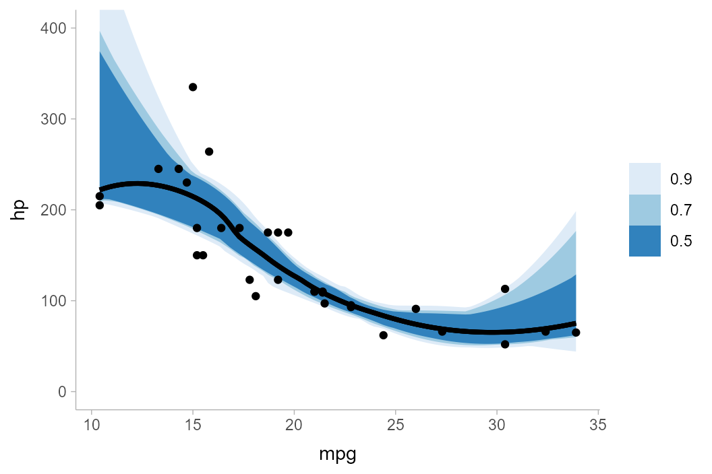

Introduction
The following vignette describes the geom_lineribbon()
family of stats and geoms in ggdist, a family of stats and
geoms for creating line+ribbon plots: for example, plots with a fit line
and one or more uncertainty bands. This vignette also describes the
curve_interval() function for calculating curvewise (joint)
intervals for lineribbon plots.
The lineribbon family
The lineribbon family follows the same naming scheme as the larger
family of slabinterval geoms (see
vignette("slabinterval")). It has two members:
geom_lineribbon() and stat_lineribbon().
-
geom_lineribbon()can be used on data already summarized into points and intervals. -
stat_lineribbon()can be used:- on sample data by mapping values onto the
xoryaesthetic. For example, it could be used with draws from a posterior distribution of lines/curves, a bootstrap sampling distribution of lines/curves, an ensemble distribution, or any other distribution, really. This stat computes relevant summaries (points and intervals) before forwarding the summaries togeom_lineribbon(). - on analytical distributions by mapping distributions onto the
xdistorydistaesthetic. It takes distributional objects,posterior::rvar()objects, or distribution names (thedistaesthetic) and arguments (theargsaesthetic orarg1, …arg9aesthetics) and computes the relevant slabs and intervals.
- on sample data by mapping values onto the
All lineribbon geoms can be plotted horizontally or vertically.
Depending on how aesthetics are mapped, they will attempt to
automatically determine the orientation; if this does not produce the
correct result, the orientation can be overridden by setting
orientation = "horizontal" or
orientation = "vertical".
Lineribbons on already-summarized data
The base lineribbon geometry can only be applied to already-summarized data: data frames where each row contains a point and the upper and lower bounds of an interval. For the purposes of this example, we will first look at how to generate such a data frame from a data frame of sample data; such data could include Bayesian posterior distributions (for examples of this usage, see vignettes in tidybayes) or bootstrap sampling distributions. For the simple example here, we’ll just generate a distribution of lines manually:
set.seed(1234)
n = 5000
df = tibble(
.draw = 1:n,
intercept = rnorm(n, 3, 1),
slope = rnorm(n, 1, 0.25),
x = list(-4:5),
y = Map(function(x, y) x + y * -4:5, intercept, slope)
) %>%
unnest(c(x, y))df is a 50,000-row data frame with a sample of 5000 y
values for each x value. It represents a sample of 5000 lines. Here is a
subsample of 100 of the lines:
df %>%
filter(.draw %in% 1:100) %>%
ggplot(aes(x = x, y = y, group = .draw)) +
geom_line(alpha = 0.25)
We can summarize the data frame at each x position using
median_qi() (or any other function in the
point_interval() family):
## # A tibble: 10 × 7
## x y .lower .upper .width .point .interval
## <int> <dbl> <dbl> <dbl> <dbl> <chr> <chr>
## 1 -4 -1.01 -3.71 1.61 0.95 median qi
## 2 -3 -0.0149 -2.38 2.30 0.95 median qi
## 3 -2 0.981 -1.14 3.07 0.95 median qi
## 4 -1 2.00 0.000809 3.97 0.95 median qi
## 5 0 2.99 1.07 4.94 0.95 median qi
## 6 1 3.99 2.04 6.00 0.95 median qi
## 7 2 4.99 2.88 7.14 0.95 median qi
## 8 3 6.00 3.58 8.44 0.95 median qi
## 9 4 7.00 4.25 9.81 0.95 median qi
## 10 5 8.01 4.89 11.2 0.95 median qiGiven data summarized like that above, we can then construct a
line+ribbon chart using geom_lineribbon():
df %>%
group_by(x) %>%
median_qi(y) %>%
ggplot(aes(x = x, y = y, ymin = .lower, ymax = .upper)) +
geom_lineribbon(fill = "gray65")
geom_lineribbon() automatically pulls in the
.width column and maps it onto the fill
aesthetic so that intervals of different widths get different colors.
However, the result with just one interval is not great, as the default
color scheme is quite dark with just one color. Let’s make two changes
to improve the chart:
- We will use the
.widthargument ofmedian_qi()to generate multiple uncertainty bands (a 50%, 80%, and 95% band). - We will use
scale_fill_brewer()to get a nicer color scheme.
The result looks like this:
df %>%
group_by(x) %>%
median_qi(y, .width = c(.50, .80, .95)) %>%
ggplot(aes(x = x, y = y, ymin = .lower, ymax = .upper)) +
geom_lineribbon() +
scale_fill_brewer()
Lineribbons on sample data
To apply lineribbons to sample data, we can also use
stat_lineribbon() instead of summarizing the data first
using median_qi() or point_interval(). This
function does the summarization internally for you.
Taking the previous example, we can simply removing the lines that
summarize the data first, and omit the aesthetic mappings onto
ymin and ymax, which are automatically set by
stat_lineribbon(). This simplifies the previous example
considerably:
df %>%
ggplot(aes(x = x, y = y)) +
stat_lineribbon() +
scale_fill_brewer()
The default .width setting of
stat_lineribbon() is c(.50, .80, .95), as can
be seen in the results above. We can change this to get other sets of
any number of intervals (e.g., c(.66, .95),
c(.80, .95, .99), etc).
Lineribbon “gradients”
You can also create gradient-like plots with lineribbons by passing a
large number of probability levels to the .width parameter.
Calling ppoints(n) generates n values between
0 and 1 (exclusive), which can be used as
interval widths. We must also override the default fill
aesthetic to use the .width generated variable, which is
continuous (by default lineribbons map level onto the
fill aesthetic, which is a transformation of
.width into a factor—and produces illegible legends when
many values are used). This also requires us to use a continuous fill
scale (e.g. scale_fill_distiller()) instead of a discrete
one (e.g. scale_fill_brewer()):
df %>%
ggplot(aes(x = x, y = y, fill = after_stat(.width))) +
stat_lineribbon(.width = ppoints(50)) +
scale_fill_distiller() +
labs(title = "stat_lineribbon(.width = ppoints(50))")
To get a gradient that ramps down to the background color, you could
also use the fill_ramp aesthetic provided by
ggdist (see help("scale_fill_ramp")). It is
necessary to invert the range (range = c(1, 0)) so that the
gradient is dark in the middle (rather than the outside).
The default legend for the fill_ramp and
color_ramp scales is guide_legend(), which
uses discrete legends even for continuous scales. To get a
gradient-style legend, use guide_rampbar(), and if
necessary, use the to = argument to specify the color to
ramp to in the legend (default is "gray65"):
df %>%
ggplot(aes(x = x, y = y, fill_ramp = after_stat(.width))) +
stat_lineribbon(.width = ppoints(50), fill = "#2171b5") +
scale_fill_ramp_continuous(range = c(1, 0), guide = guide_rampbar(to = "#2171b5")) +
labs(
title = "stat_lineribbon(.width = ppoints(50))",
subtitle = 'aes(fill_ramp = after_stat(.width)) +\nscale_fill_ramp_continuous(guide = "rampbar")'
)
It’s worth noting that the use of .width as the fill
color means these gradients are akin to classical “fan” charts; i.e. the
fill color is proportional to the folded CDF or the so-called
“confidence function”. We may instead want the fill color to be
proportional to the density.
Lineribbon density gradients
Making the fill proportional to density is a bit more complicated to
achieve, but can be approximated using an experimental
feature in the latest version of ggdist. This feature exposes density
and CDF information to interval sub-geometries. As this feature is
fragile and not fully supported across all scenarios of use, it must be
enabled by setting
options(ggdist.experimental.slab_data_in_intervals = TRUE).
Internally, with this feature enabled, ggdist calculates the density
of the lower (pdf_min) and upper (pdf_max)
ends of the intervals; you can use the average of these (or just their
sum, since we don’t need to care about normalizing constants) as an
approximation of the density for each interval. These averages must be
taken within values of .width so that each strip
gets the same fill color, which can be done using the ave()
function, which takes the average of its first argument within groups of
the second:
withr::with_options(list(ggdist.experimental.slab_data_in_intervals = TRUE), print(
df %>%
ggplot(aes(x = x, y = y, fill_ramp = after_stat(ave(pdf_min + pdf_max, .width)))) +
stat_lineribbon(.width = ppoints(50), fill = "#2171b5") +
scale_fill_ramp_continuous(name = "density", guide = guide_rampbar(to = "#2171b5")) +
labs(
title = "stat_lineribbon(.width = ppoints(50))",
subtitle = 'aes(fill_ramp = after_stat(ave(pdf_min + pdf_max, .width)))'
)
))
You may notice that the steps in the gradient now look a little
“jumpy” near the edges of the band: this is because the
ppoints() function is giving us even steps in probability
space (i.e. the CDF), which are not even steps in terms of
density. It is not strictly necessary to fix for the
correctness of the color, but is more visually appealing without the
jumpiness.
We can pick some steps that are more likely to be even in density
space using evenly-spaced z values and translating them into
probability levels using pnorm(). It does not matter if our
target distribution is non-Normal, since the actual densities are still
set using pdf_min and pdf_max (so colors will
still be correct), but the closer the distribution is to Normal the less
jumpy-looking the gradient will be.
withr::with_options(list(ggdist.experimental.slab_data_in_intervals = TRUE), print(
df %>%
ggplot(aes(x = x, y = y, fill_ramp = after_stat(ave(pdf_min + pdf_max, .width)))) +
stat_lineribbon(.width = pnorm(seq(-2.5, 2.5, length.out = 50)), fill = "#2171b5") +
scale_fill_ramp_continuous(name = "density", guide = guide_rampbar(to = "#2171b5")) +
labs(
title = "stat_lineribbon(.width = pnorm(seq(-2.5, 2.5, length.out = 50)))",
subtitle = 'aes(fill_ramp = after_stat(ave(pdf_min + pdf_max, .width)))'
)
))If you are using a different background color than
"white", you can pass that color to the from
argument of scale_fill_ramp_continuous() to ramp from that
color to the fill color of the lineribbon.
Multiple lineribbons on one plot
One may also want to plot multiple lineribbons on the same plot, perhaps corresponding to separate groups. This might require applying a different color or fill to differentiate the lineribbons. Consider these data:
The naive approach to plotting will make the lines hard to distinguish:
df_2groups %>%
ggplot(aes(x = x, y = y, color = g)) +
stat_lineribbon() +
scale_fill_brewer()
Instead, we could change the fill color and allow the lines the be semi-transparent:
df_2groups %>%
ggplot(aes(x = x, y = y, fill = g)) +
stat_lineribbon(alpha = 1/4) +
labs(title = "stat_lineribbon(aes(fill = g), alpha = 1/4)")
We could also use the fill_ramp aesthetic provided by
ggdist to similar effect (see
help("scale_fill_ramp")), though this tends to work best
when the lines do not overlap:
df_2groups %>%
ggplot(aes(x = x, y = y, fill = g)) +
stat_lineribbon(aes(fill_ramp = after_stat(level))) +
labs(title = "stat_lineribbon(aes(fill = g, fill_ramp = after_stat(level)))")One way to avoid problems created by overlapping ribbons (besides
using alpha, as above) is to use commutative blending modes
available in R > 4.2. The ggblend package enables
support for such blending modes, and its documentation includes examples
of their use with stat_lineribbon().
In some situations, you may also try controlling the draw order of
ribbons directly, by adjusting the order aesthetic. By
default, if the order aesthetic is not specified,
geom_lineribbon() draws ribbons that are widest on average
at the bottom. stat_lineribbon(), by default, is a bit
smarter, and sets the order aesthetic to
after_stat(level), using the level computed
variable to draw ribbons in order of their confidence / probability
mass. An alternative might be to draw all ribbons from the same group on
top of each other, like so:
df_2groups %>%
ggplot(aes(x = x, y = y, fill = g)) +
stat_lineribbon(aes(
fill_ramp = after_stat(level),
order = after_stat(interaction(level, group))
)) +
labs(title = "stat_lineribbon(aes(order = after_stat(interaction(level, group))))")Lineribbons on analytical distributions
Lineribbons can also be applied to analytical distributions. This use
case often arises with confidence distributions describing uncertainty
in a fit line; for an example, see the end of
vignette("freq-uncertainty-vis"). Here, we will look at a
simpler example where we construct the distributions manually; here
we’ll assume some variable y that is normally distributed
conditional on x with mean y_mean and standard
deviation y_sd:
## # A tibble: 10 × 3
## x y_mean y_sd
## <int> <dbl> <dbl>
## 1 -4 -1 1.61
## 2 -3 0 1.38
## 3 -2 1 1.18
## 4 -1 2 1.05
## 5 0 3 1
## 6 1 4 1.05
## 7 2 5 1.18
## 8 3 6 1.38
## 9 4 7 1.61
## 10 5 8 1.87We can visualize this conditional distribution using
stat_lineribbon() with
distributional::dist_normal():
analytical_df %>%
ggplot(aes(x = x, ydist = dist_normal(y_mean, y_sd))) +
stat_lineribbon() +
scale_fill_brewer()
More examples
For more examples of lineribbons, including multiple lineribbons in
the same plot, see the examples at the end of
vignette("freq-uncertainty-vis").
Curve boxplots (aka lineribbons with joint intervals or curvewise intervals)
The above examples all calculate conditional intervals,
either using point_interval() (directly or indirectly) or
using quantiles of an analytical distribution. However, you may not
always want conditional intervals.
Where point_interval() calculates pointwise
intervals, or intervals conditional on each group,
curve_interval() calculates joint or
curvewise intervals. In the literature these are also called
curve boxplots (Mirzargar et
al. 2014, Juul
et al. 2020).
An example will help illustrate the difference between the two types of intervals. Consider the following set of curves, where each curve is assumed to be a “draw” from some distribution of curves, \(\mathbf{y} = f(\mathbf{x})\), where \(\mathbf{x}\) and \(\mathbf{y}\) are vectors:
k = 11 # number of curves
n = 501
df = tibble(
.draw = 1:k,
mean = seq(-5, 5, length.out = k),
x = list(seq(-15, 15, length.out = n))
) %>%
unnest(x) %>%
mutate(y = dnorm(x, mean, 3)/max(dnorm(x, mean, 3)))
df %>%
ggplot(aes(x = x, y = y)) +
geom_line(aes(group = .draw), alpha = 0.2)
If one used one of the point_interval() functions to
summarize this curve (such as median_qi(),
mean_qi(), etc), it would calculate pointwise
intervals:
df %>%
group_by(x) %>%
median_qi(y, .width = .5) %>%
ggplot(aes(x = x, y = y)) +
geom_lineribbon(aes(ymin = .lower, ymax = .upper)) +
geom_line(aes(group = .draw), alpha = 0.15, data = df) +
scale_fill_brewer() +
ggtitle("50% pointwise intervals with point_interval()")
The 50% pointwise interval calculated at (say) \(x = 1\) would contain 50% of the draws from \(y|x=1\). At a different value of \(x\), say \(x = 2\), the 50% pointwise interval would also contain 50% of the draws from \(y|x = 2\). However, the specific draws contained in the interval for \(y|x=2\) might be different draws from those contained in the interval for \(x|y=1\): if you trace any of the underlying curves, you will notice that each curve is included in some intervals and not included in others. Thus, the set of intervals—the ribbon—may not fully contain 50% of curves. Indeed, inspecting the above plot, the 50% ribbon contains none of the curves!
Depending on what type of inference we care about, this might be sufficient for our purposes: maybe we are interested just in what the outcome is likely to be at a given x value (a conditional inference), but we are not interested in joint inferences (e.g., what is the shape of the curve likely to look like?). However, if we are interested in such joint inferences, pointwise intervals can be misleading. The shape of the median curve, for example, looks nothing like any of the possible outcomes. The interval also does not include the maximum value of any of the underlying curves, which might cause us to conclude (incorrectly) that a value close to 1 is unlikely, when the exact opposite is the case (every curve touches 1).
One solution I like for such situations is to show spaghetti plots:
just plot the underlying curves. This is a so-called frequency
framing uncertainty visualization, and it tends to work fairly
well. However, in some cases you may want a visual summary using
intervals, in which case curvewise intervals could help. Using
curve_interval() instead of point_interval()
or median_qi() calculates these:
df %>%
group_by(x) %>%
curve_interval(y, .width = .5) %>%
ggplot(aes(x = x, y = y)) +
geom_lineribbon(aes(ymin = .lower, ymax = .upper)) +
geom_line(aes(group = .draw), alpha = 0.15, data = df) +
scale_fill_brewer() +
ggtitle("50% curvewise intervals with curve_interval()")
Note how the 50% curvewise interval now contains half of the underlying curves, and the median curve is one of the underlying curves (so it is more representative of the curve shape we should expect). These intervals also cover the peaks of the curves, where the pointwise intervals did not.
An X% curvewise interval is calculated across all the curves
by taking the top X% closest curves to the central curve, for some
definition of “close” and “central”. The curve_interval()
function currently orders curves by mean halfspace depth, which is
basically how close each curve is to the pointwise median in
percentiles, on average.
Given the above, let’s see what more realistic curvewise intervals of the above example might look like by using a larger number of draws:
k = 1000 # number of curves
large_df = tibble(
.draw = 1:k,
mean = seq(-5,5, length.out = k),
x = list(seq(-15,15,length.out = n))
) %>%
unnest(x) %>%
mutate(y = dnorm(x, mean, 3)/max(dnorm(x, mean, 3)))
pointwise_plot = large_df %>%
group_by(x) %>%
median_qi(y, .width = c(.5, .8, .95)) %>%
ggplot(aes(x = x, y = y)) +
geom_hline(yintercept = 1, color = "gray75", linetype = "dashed") +
geom_lineribbon(aes(ymin = .lower, ymax = .upper)) +
scale_fill_brewer() +
ggtitle("point_interval()")
curvewise_plot = large_df %>%
group_by(x) %>%
curve_interval(y, .width = c(.5, .8, .95)) %>%
ggplot(aes(x = x, y = y)) +
geom_hline(yintercept = 1, color = "gray75", linetype = "dashed") +
geom_lineribbon(aes(ymin = .lower, ymax = .upper)) +
scale_fill_brewer() +
ggtitle("curve_interval()")
pointwise_plot / curvewise_plot
Notice how the pointwise intervals miss out on the peaks of this distribution of curves. Even the 95% ribbon, which appears to reach up to the peaks, in fact falls slightly short. While this is a bit of a pathological example, it does demonstrate the potential shortcomings of pointwise intervals.
Limitations of curvewise intervals
One challenge with curvewise intervals is that they can tend to be
very conservative, especially at moderate-to-large intervals widths.
Let’s bootstrap some LOESS fits to horsepower versus MPG in the
mtcars dataset:
set.seed(1234)
n = 4000
mpg = seq(min(mtcars$mpg), max(mtcars$mpg), length.out = 100)
mtcars_boot = tibble(
.draw = 1:n,
m = lapply(.draw, function(d) loess(
hp ~ mpg,
span = 0.9,
# this lets us predict outside the range of the data
control = loess.control(surface = "direct"),
data = slice_sample(mtcars, prop = 1, replace = TRUE)
)),
hp = lapply(m, predict, newdata = tibble(mpg)),
mpg = list(mpg)
) %>%
select(-m) %>%
unnest(c(hp, mpg))This is a pretty naive approach, and definitely not a great way of analyzing this data, but it will illustrate the problems of some kinds of problems we might get with joint intervals. Let’s look at a spaghetti plot of just 400 draws from this bootstrap distribution first:
mtcars_boot %>%
filter(.draw < 400) %>%
ggplot(aes(x = mpg, y = hp)) +
geom_line(aes(group = .draw), alpha = 1/10) +
geom_point(data = mtcars) +
coord_cartesian(ylim = c(0, 400))
Now, pointwise intervals:
mtcars_boot %>%
ggplot(aes(x = mpg, y = hp)) +
stat_lineribbon(.width = c(.5, .7, .9)) +
geom_point(data = mtcars) +
scale_fill_brewer() +
coord_cartesian(ylim = c(0, 400))
Finally, curvewise intervals:
mtcars_boot %>%
group_by(mpg) %>%
curve_interval(hp, .width = c(.5, .7, .9)) %>%
ggplot(aes(x = mpg, y = hp)) +
geom_lineribbon(aes(ymin = .lower, ymax = .upper)) +
geom_point(data = mtcars) +
scale_fill_brewer() +
coord_cartesian(ylim = c(0, 400))Notice how noisy the curvewise intervals are. In addition, because a
number of curves tend to start low and end high (or vice versa), above
50%, the bands rapidly expand to cover almost all of the curves in the
sample, regardless of coverage level. You can try different methods to
sometimes get improved bands; e.g. using the "bd-mbd"
method per Sun and Genton (2011) works better on
this dataset:
mtcars_boot %>%
group_by(mpg) %>%
curve_interval(hp, .width = c(.5, .7, .9), .interval = "bd-mbd") %>%
ggplot(aes(x = mpg, y = hp)) +
geom_lineribbon(aes(ymin = .lower, ymax = .upper)) +
geom_point(data = mtcars) +
scale_fill_brewer() +
coord_cartesian(ylim = c(0, 400))
In general I have found that there is no one method that consistently
works well on all datasets. No matter the method, intervals often become
problematic above 50%, hence the default .width for
curve_interval() is 0.5 (unlike the default
for point_interval(), which is 0.95). In any
case, caution when using these intervals is advised.